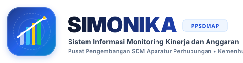

Sistem Informasi Monitoring Kinerja dan Anggaran — PPSDM Aparatur Perhubungan

Merepresentasikan fungsi Monitoring (Pengawasan) yang berkelanjutan, fokus, dan komprehensif terhadap 7 Indikator Kinerja Utama dan alokasi anggaran instansi.
Melambangkan integrasi antara Capaian Kinerja dan Realisasi Anggaran (Pagu vs Realisasi) yang bergerak naik secara terukur dan transparan.
Terinspirasi dari bentuk sayap dan lintasan khas Kementerian Perhubungan, mencerminkan akselerasi pencapaian target kerja yang melampaui standar (Target Tercapai).
Identitas resmi perhubungan, melambangkan integritas, profesionalitas ASN, dan stabilitas institusi.
Melambangkan kesehatan tata kelola anggaran DIPA, keterbukaan informasi, dan sinergi antar unit kerja.
Melambangkan keunggulan mutu pelatihan dan kualitas SDM Aparatur Perhubungan yang berdaya saing tinggi.